Digital Canvassing
With mapping, we can canvas a geographical area via digital advertising without knocking on doors or passing out flyers.
Hyper-targeted advertising
The data tells you which supporters are ready. Hyper-targeted advertising puts your message in front of the households most likely to become supporters — through digital advertising and direct mail.
Hyper-target marketing is an advanced advertising strategy that uses data and user behavior to reach narrow, specific audience groups instead of a large general crowd.
How the two halves fit
“We look at your data and tell you where the revenue is. Then we make sure the right people actually see the ask.”Tracey Wiseman, Strategic Fundraising Leader
What it covers
Delivered with David Galvin, lead reseller for El Toro, whose platform powers the targeting behind each of these.
With mapping, we can canvas a geographical area via digital advertising without knocking on doors or passing out flyers.
Nonprofits gain a competitive advantage from our marketing technology as we secure dataset which form the foundation of our analysis, delivering statistically reliable insights to prospective donors.
Transform traditional direct mail from a broad, expensive gamble into a precise, automated, and measurable revenue engine. Apply your predictive and digital intent data to automatically trigger customized mailers the moment a prospective donor shows interest. Send the right message to the right audience — precisely when they are most likely to give.
Deliver precise ads to the right audience with our data-driven platform.
Unlock donor data to understand and connect.
In practice
Nothing here replaces the relationship. It decides who is worth starting one with, and spares your team the cost of reaching everyone else.
Who you want to reach — a neighbourhood, a giving profile, people already showing interest in your cause.
Step 01Your message reaches them where they already are — as digital advertising, as direct mail, or both together.
Step 02What came back, from which audience — so the next campaign starts better informed than the last.
Step 03
Fifteen minutes with Tracey and David to see what your data says, and who your next campaign should be reaching.